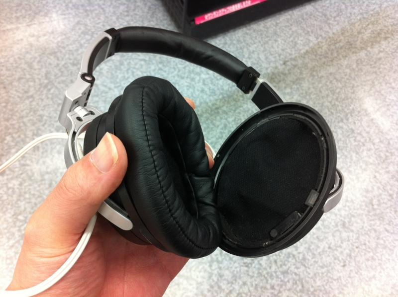
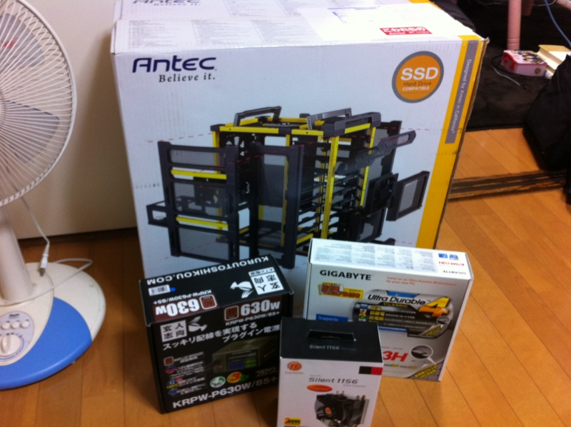
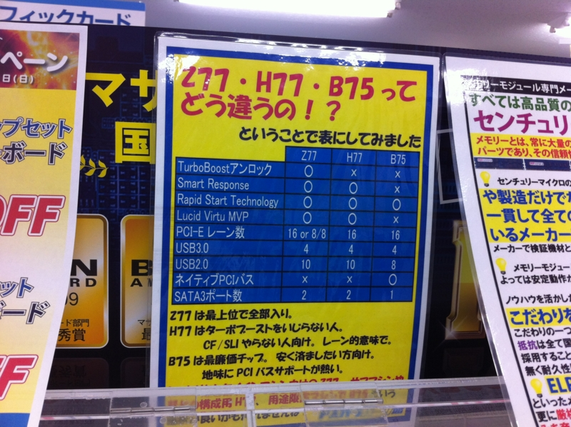
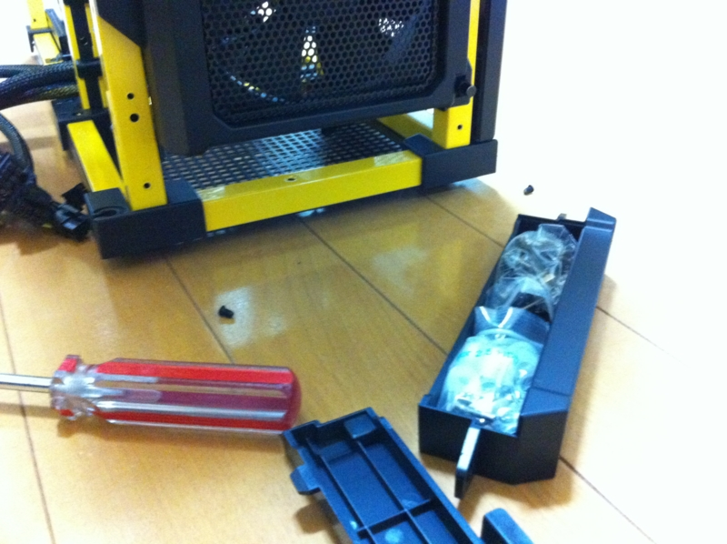
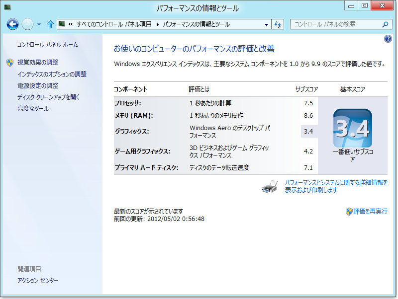

連休4日目。PCを自作した。
公開日：

愛用のノイズキャンセル・ヘッドフォンの耳をニコニコ超会議でなくしたので、これを購入したヨドバシ錦糸町までいって代替品の注文をしてきた。どうせなので、アキバまで足を延ばしてPCのパーツを購入し、買うだけ買って放置していたケースを有効活用することに。

生まれて初めてニコニコ生放送でしゃべりながら2時間半、ビール片手にネコミミ装着してのんびり組み立てました。
パーツ構成
今回のパーツ構成は以下の通り。“最新の Ivy Bridge CPUを使った Windows 8で「Visual Studio」が快適に動くPC（なるべく安く）”というのがテーマなので、ゲーマーやオーバークロッカーにとってはイマイチな構成かも。
CPU - インテル Core i5 3570T（17,000円ぐらい）
発売されたばかりの「IvyBridge」世代CPU、バルク品。「T」は省電力モデルになっていて、周波数とTDPが抑えられている。
「IvyBridge」は4コアで、一万円ぐらい高い「i7」シリーズはさらに HyperThreading が付いて論理コア数は8個に達する。でもまぁ、「T」を選択した時点でパフォーマンスを捨てているので、ことさら「i7」にこだわる必要はないかな。「i7」が搭載するワンランク上の内蔵グラフィックは魅力的だけど、足りなくなればミドルレンジのGPUを足すつもりなので、今回は「i5」で十分。
CPUクーラー - Thermaltake Silent 1156 CLP0552（3,000円ぐらい）
CPUはバルク品だったので、クーラーが付属していない。仕方ないので、適当なモノを購入。ちょっと割高感を感じるけど、ファンの音はほとんどしない感じ。リテールクーラーがどんなものかは知らないけど、まぁ、満足している。
マザーボード - GIGABYTE GA-B75M-D3H（7,000円ぐらい）
マザーボードは思い切ってケチった。オーバークロックに挑戦するつもりもないし、ハイパフォーマンスにこだわるつもりもない。ただ、今後のことも考えてメモリスロットは4レーンほしい。

GIGABYTE intel B75 LGA1155 Micro ATX Small Business Advantage対応 GA-B75M-D3H
- 出版社/メーカー: 日本ギガバイト
- 発売日: 2012/04/09
- メディア: Personal Computers
- クリック: 4回
- この商品を含むブログ (1件) を見る
というわけで、チョイスしたのは「GIGABYTE GA-B75M-D3H」。「7」シリーズのチップセットには「Z77」「H77」などもあるみたいだけど、これはビジネス向けの廉価チップセット「B75」を採用していて、PS/2ポートやPCIを搭載しているのが特長といえばいえるのかも。

ドスパラで掲出していたチップセットの比較表は、最近の動向には疎い、わしみたいな浦島太郎にはありがたい。感謝をあらわすためにも、今回は全部ドスパラでパーツを買っている。
もしもう少し色気のある構成を望むなら、このマザーボードの部分を少し奢るといいんじゃないかな。そうなると、CPUも「i7」（上位版）、「K」（オーバークロック向け）を選びたくなってくるので悩ましいけれど……
メモリ - ADATA AD3U1333W8G9-2（8,000円ぐらい）
8GBでも十分だけど、仮想化を考えて多めに搭載（Windows 8だし！）。それにしても、16GBってすげーな……
ストレージ - OCZ Agility3 240GB（流用）

OCZ Agility3 240GB 2.5inch SSD SATA6Gbps 3年保証 MLC採用 AGT3-25SAT3-240G
- 出版社/メーカー: シー・エフ・デー販売
- メディア: Personal Computers
- クリック: 10回
- この商品を含むブログを見る
以前に購入したものを流用（SSD 120GB → 240GB - だるろぐ）。流用しないならば、120GBぐらいのSSDをチョイスするとコスパ的によさげ。
あと、DVD-ROMドライブも流用している。BDドライブがそろそろほしくなってきたけど、うちの場合、HDMIディスプレイも買わなきゃなのでちょっと様子見だね。
ケース - LANBOYAIR-YELLOW（12,000円ぐらい）

ANTEC レイアウトを自在にカスタマイズ可能なオープンイエローフレームのモジュラーPCケース LANBOYAIR-YELLOW
- 出版社/メーカー: Antec
- 発売日: 2010/08/15
- メディア: Personal Computers
- クリック: 13回
- この商品を含むブログ (1件) を見る
今回は全体的にケチケチ構成だけど、ケースは気に入ったモノがあったので、少し奮発した。かなり柔軟にパーツをレイアウトできるのが売りのようだけど、個人的には黄色のフレームをうまく使ったデザインに一票。

最初はネジ類が見つからず、「もしかして添付忘れか！？」と思ったのだけど、ケース下段にある隠しボックスに収められていた。こんなん気付かないよ！ しかもこのボックス、わざわざネジ止めされているので気軽に引き出して使えない。余った部品をなくさないように入れておく程度にしか使えないのは痛いかな。
電源 - 玄人志向 KRPW-P630W/85+（6,000円ぐらい）

玄人志向 電源 80PLUS Bronze 630W プラグイン KRPW-P630W/85+
- 出版社/メーカー: 玄人志向
- メディア: Personal Computers
- 購入: 1人 クリック: 31回
- この商品を含むブログを見る
玄人志向の電源は買ったことなかったけど、これはいい感じ。必要なケーブル以外は取り除けるプラグイン式なので、ケースないの配線がスッキリ！ お値段も手ごろで申し分ない。容量630Wはグラボを挿したときに若干不安だけど、今回の構成では十二分だし、将来的にもミドルレンジ以上のGPUは買い足す予定がないのでこの程度でよさそうだ。
Windows エクスペリエンス インデックス

グラフィックドライバーを入れていない、Windows 8を入れただけの状態。まぁ、不満はないかな。
ちなみに、今回の総支出は小物を含めても60,000円弱といったところか。趣味を除けば、もう自作に手を出す意味などほとんどない感じだけど、やっぱり自分好みの構成を楽しめるのと、既存のパーツが流用できる場合は安くつくのが魅力的ではある。